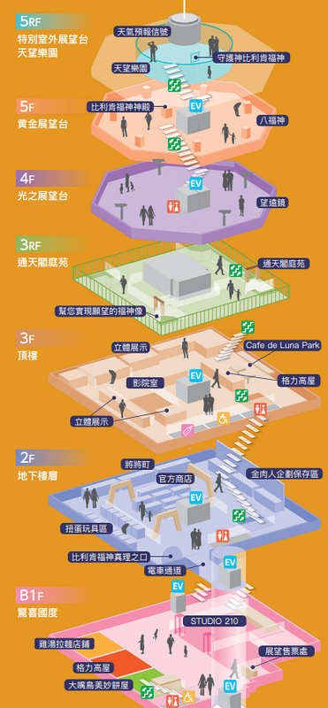

通天閣区 Tsutenkaku
大阪通天閣是大阪市新世界商店街當中的一個瞭望塔，站在塔上能將整個大阪市風貌一覽無遺，而塔內也有筋肉人的展出，喜歡筋肉人的朋友也可以來這邊跟1:1的人像拍照囉，此外附近的大阪新世界商圈也是來大阪不可錯過的景點之一，有不少有特色的商店美食(炸串kushi katsu)可以享用
新世界鄰近也有四天王寺跟天王寺動物園可以參觀，一樣是使用大阪周遊券囉，一樣免門票啊. 邊吃通天閣美食 (大阪新世界美食) 更是過癮，「串炸」發源地就在這裡呢，必吃串炸達摩排到天荒地老啊～
地图

参观地点 Attractions
1. 通天閣 Tsutenkaku

大阪的象徵"大阪的埃菲爾鐵塔"。有位於5樓的可以飽覽大阪景色的觀景台和據說摸了腳底就會走運的神祇--比利堅福神像。
Tsūtenkaku, owned by Tsūtenkaku Kanko Co., Ltd., is a tower and well-known landmark of Osaka, Japan and advertises Hitachi. It is located in the Shinsekai district of Naniwa-ku, Osaka. Its total height is 103 m; the main observation deck is at a height of 91 m.
所需時間 30分
费用 成人800日圓、5歳～初中生 400日圓
09:00-21:00；停止入场时间:20:30 (1月1日-12月31日 周一-周日)
网址 http://www.tsutenkaku.co.jp
通天閣參觀重點：比利肯神像、大阪市容、天望樂園、晚上夜景霓虹燈
從B1開始漫長的排隊過程，感覺得出來通天閣試著將它變有趣，必買土產、免費通天閣紙模型、整排扭蛋區等，但這一切還是讓我有些不耐煩，動線狹窄且毫無座位區，若有攜帶老人小孩得有心理準備喔～到5樓精彩才開始。
# 通天閣重點 1：比利肯福神
上電梯後，看著觀看重點之一的比利肯福神總算好些，這裡附近到處都可見其蹤影，
但事實上祂非源於日本，而是美國女藝術家夢到的福神雛形，據說摸祂腳掌能實現願望，會帶來好運氣喔～
整個5樓黃金展望台總共有八個福神，惠比壽、布袋、吉祥天、壽老人環伺，記得看看祂們求個好運。
# 通天閣重點 2：大阪市容
不過真正徹底一掃而空煩悶之感的是，這一望無際的視野，心曠神怡好舒服啊。 波比還看到了通天閣附近景點，天王寺動物園長頸鹿在走路啃樹葉耶，超酷的～
# 通天閣重點 3：天望樂園
五樓櫃台還可以再附500日幣上樓，前往無任何玻璃遮蔽的室外區 - 天望樂園。
# 通天閣重點 4：通天閣夜景 (霓虹燈天氣預報)
通天閣夜景也是超強重點，晚上的通天閣塔身外觀會依「不同月份」，分別展示12種燈光效果。
另外頂端圓形天氣預測霓虹燈也很趣味耶，其他樓層的小地方像是漫畫《金肉人》、固力果商店就不特別介紹啦。
整體來說覺得很讚，景觀台景色不是最強的特點，因為附近景點阿倍野展望台夜景更美。但結合新世界商店街四周的舊時代氛圍，讓這裡變得與眾不同，是個值得特別造訪，用心感受的大阪景點呢。
详细攻略 https://anrine910070.pixnet.net/blog/post/226745303


2. 新世界商店街 Shinsekai

大阪通天閣是知名大阪景點，順遊附近景點新世界商店街最是好玩。來通天閣門票搭配周遊卡免費超划算， 邊吃通天閣美食 (大阪新世界美食) 更是過癮，「串炸」發源地就在這裡呢，必吃串炸達摩排到天荒地老啊～
說到通天閣美食，最不能錯過的就是通天閣串炸了。不過超強人氣店不在通天閣餐廳裡面，而是分布在旁邊的大阪新世界商店街 (大阪新世界本通商店街)＆鏘鏘橫丁 (ジャンジャン横丁)，走路五分鐘而已。
新世界本通商店街裡很好拍，非常多特色招牌，閒逛的同時還發現了不少小鋼珠柏青哥店，我猜想，這大概是為什麼有人會對大阪新世界晚上治安，存有疑慮的原因之一吧～

通天閣串炸激戰區中，串炸達摩 (串カツだるま)、八重勝這兩家美食聲勢最高，評價極高不能錯過啊～
看看串炸達摩 (串カツだるま) 的人氣，恐怖耶～這附近總共有四家店，大阪道頓堀、心齋橋也還有分店。 如果沒有特別執著的人，或許可以考慮妥協，喜歡道地感覺的人就排吧，大阪新世界美食沒吃到它怎麼行！
八重勝串炸也不惶多讓，店家說至少得排40分鐘以上，通天閣必吃美食就這麼幾家，自然搶手啦～